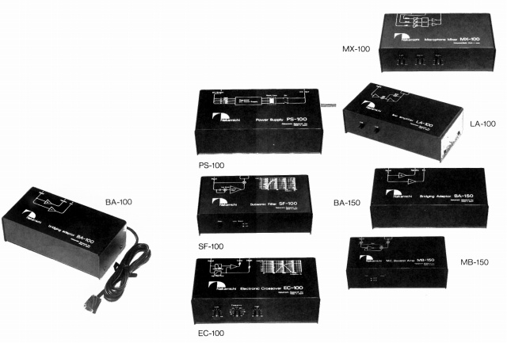

ブラックボックス・シリーズ

BA-100 ステレオパワーアンプをモノラル動作させる位相反転アダプター。
PS-100 ブラックボックス・シリーズ用の電源装置。
SF-100 サブソニックフィルター。低域不足を補う30Hzで5dBブーストする回路付き。
EC-100 2ウエィマルチアンプシステム用のデバイディングアンプ。
MX-100 マイクロフォン・ミキサー。
LA-100 ラインアンプ。テープデッキの入出力レベルの調整用。
BA-150 ステレオパワーアンプをモノラル動作させる位相反転アダプター。